На практиці з інформатики наша команда отримала завдання дослідити та знайти найкращий план використання грошових ресурсів для фірми, яка планує купити 1000000 $ США для закупівлі імпортного устаткування. Фірма на даний час має 10000000 гривень, а також має 3 схемми для їх реалізації.
Перейдемо до розгляду трьох схем, які пропонуються нам в задачі: Так, за схемою А ми маємо придбати валюту сьогодні (курс грудня 2011 р.) та покласти гроші на валютний рахунок до банку-партнера. Решту коштів рекомендовано покласти на гривневий рахунок. Ставки за різними вкладами наведені в таблиці 2:
За схемою 2 менеджер фірми пропонує нам покласти 10 000 000 грн на гривневий рахунок у той самий банк, а через три місяці придбати необхідні валютні кошти за поточним курсом.
Остання схема – В, у якій на пропонується Придбати на фондовому ринку ф’ючерси на купівлю через три місяці доларів за курсом 7,90 грн за 1 дол. США . Вартість одного ф’ючерса на купівлю 1000 доларів — 100 грн.
Для вирішення цієї проблеми нам пропонують використовувати такі програми: Microsoft Excel, Microsoft Access, а також створити власний спосіб вирішення за допомогою мови програмування Microsoft Visual Basic.
Менеджер дав нам завдання визначити критерій оптимальності прийняття рішень щодо вибору стратегії реалізації 10000000 грн. Порадившись, ми визначили, що таким критерієм буде вигідність використання рахунків банків, які нам запропонував менеджер фірми. Найоптимальнішим буде та стратегія, за якої ми матимемо найменші витрати та збережемо найбільше грошових коштів. Нижче, у звіті, ми на практичному розв’язанні доведемо які рахунки будуть вигідними, а які навпаки збитковими для нашого замовника.
Також, керівництво фірми дало нам завдання відсіяти ті рахунки, які ми не зможемо використати з тих чи інших причин. Ми виокремили ті рахунки, які не зможемо використовувати через їх строк виплати, а саме: Строковий 6, Строковий 9, Строковий 12. Залишились такі рахунки: Строковий 1, Легкий та Простий. Тому, в подальшому, ми будемо досліджувати всі схеми тільки за допомогою цих трьох рахунків.
Наступним завданням, яке було поставлене перед нами – це спрогнозувати курс долара США на березень 2012 року. Для цього ми використали лінію тренду, яка показала нам, що прогнозований курс на березень 2012 року буде 7,991 грн за 1 долар США.
Коли ми дізнались прогнозований рахунок, менеджер поставив перед нами завдання проаналізувати кожну схему закупівлі валюти з урахуванням можливості покласти гроші на один с депозитних рахунків. Весь процес аналізу ми розкриємо у нашому звіті нижче.
Перше середовище у якому ми вирішили поставлену перед нами задачу був Microsoft Excel. На Листі 1 представлено всю подану інформацію від менеджера. Синім кольором виділено 3 рахунки, які ми використовували для розв’язання поставленої задачі.
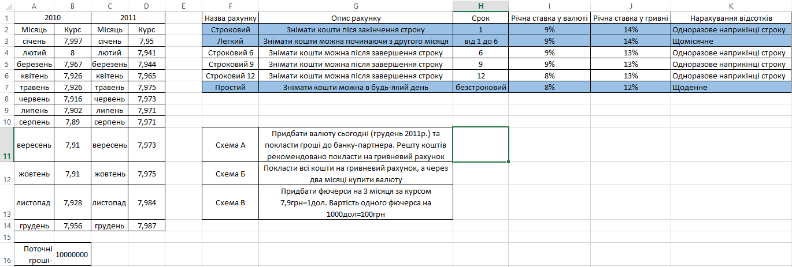Наступний лист називається Схема Б, ми почали саме з цієї схеми не випадково. На цьому листі ми зобразили лінію тренду динаміки розвитку валютного курку та спрогнозували його на березень 2012 року.
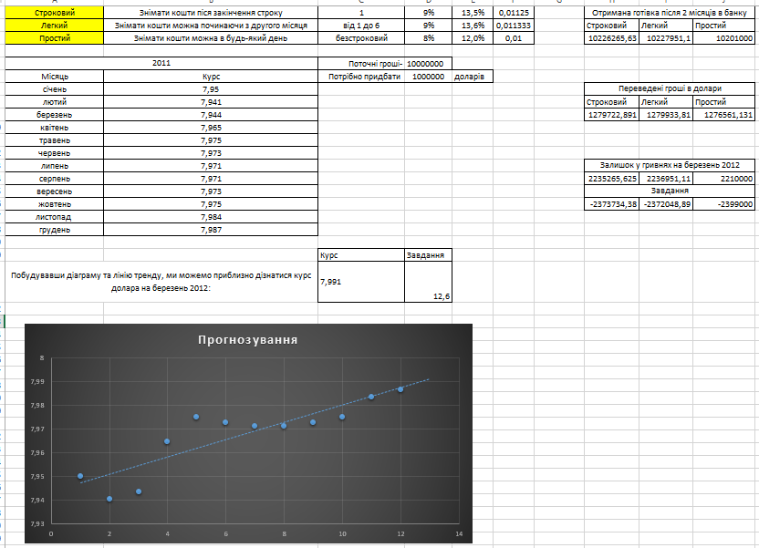Також, на цьому листі ми виконали ще одне завдання нашого менеджера – дослідили, що станеться с нашими коштами, якщо курс на березень 2012 року буде 12,6 грн за 1 долар США. Дослідження показали, що ми матимемо від’ємні показники і за сього курсу всі три депозитні рахунки, які ми будемо використовувати будуть тільки приносити нам збиток. На наступному листі – Схемі А ми дослідили, який з депозитних рахунків буде найбільш вигідним для нас, якщо придбати валюту одразу, а гривневий залишок покласти на один з депозитних рахунків.
Отже, з цього можемо бачити, що Строковий та Легкий рахунок буде більш вигідним для нас ніж Простий. На наступному листі – Схемі В ми дослідили, чи вигідно нам використовувати ф’ючерси для купівлі у березні устаткування на 1000000 доларів США.
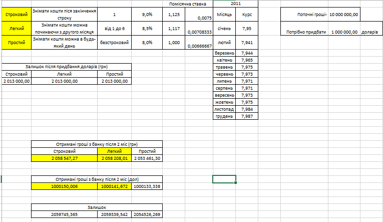Отже, з цього можемо бачити, що Строковий та Легкий рахунок буде більш вигідним для нас ніж Простий. На наступному листі – Схемі В ми дослідили, чи вигідно нам використовувати ф’ючерси для купівлі у березні устаткування на 1000000 доларів США.
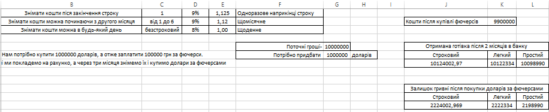На купівлю ф’ючерсів ми витратили 100000 гривень, на залишок 9900000, за цією схемою Строковий рахунок також буде найвигіднішим. В останньому листі ми зробили короткий висновок, що в схемі А та В вигідним рахунком буде Строковий, а Легкий в схемі В. Рахунок Простий не буде вигідний для нас.
Для того, щоб полегшити розв’язку задачі за допомогою даного програмного забезпечення потрібно створити допоміжні таблиці. Обов’язково робимо зв’язки між ними: 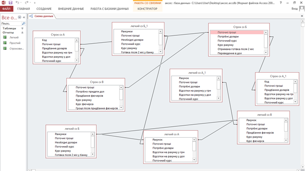
Далі ми створюємо звіти, що будуть демонструвати роботу рахунків, для кінцевого порівняння для оптимізації наших коштів: 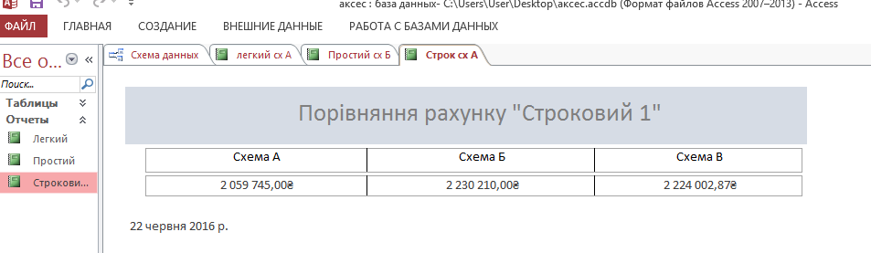 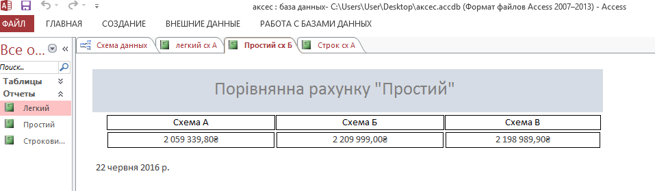 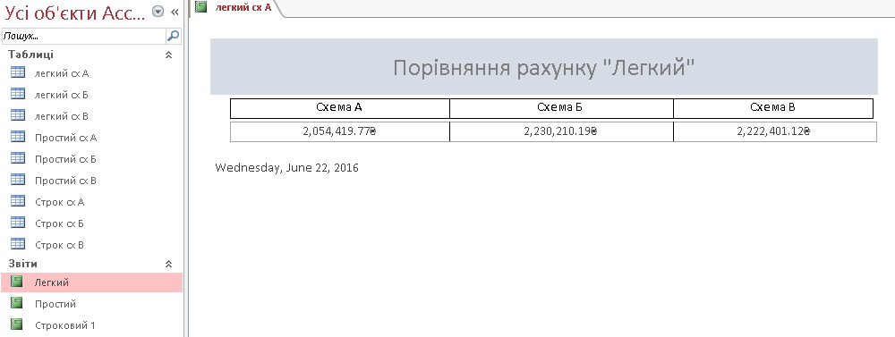
Опісля ми робимо висновки про доцільність використання даних рахунків та вибираємо найвигідніший. В даному випадку це буде рахунок легкий для схеми А і В, та строковий для схеми Б.
Середовище розробки VB містить інструменти для візуального конструювання користувацького інтерфейсу. Приклад 1: Загальний вигляд задачі
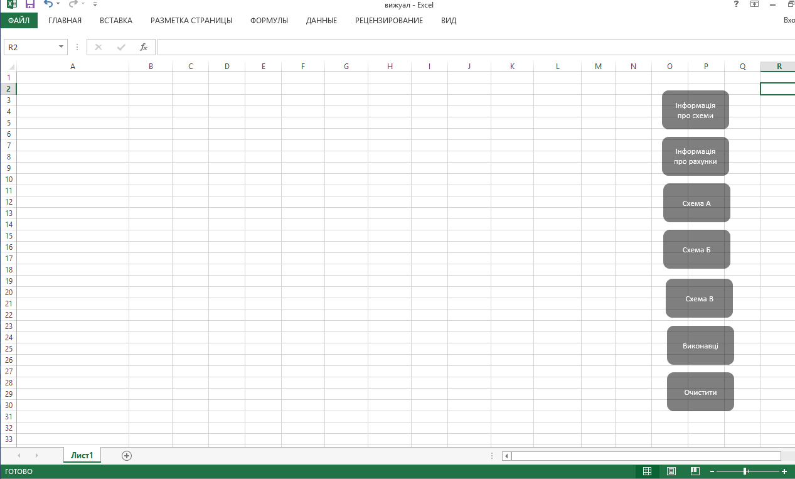Розглянемо детальніше побудову та функції кожної з кнопок. Кнопка «Інформація про схеми» дає нам загальні відомості про структуру, дані та постановку задачі для ознайомлення:
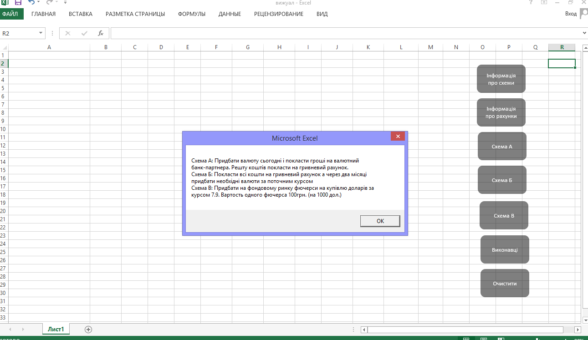Kнопка «Інформація про рахунки» має відомості по строковому, легкому та простому рахунку, тобто їхні відсотки та річні ставки відповідно:
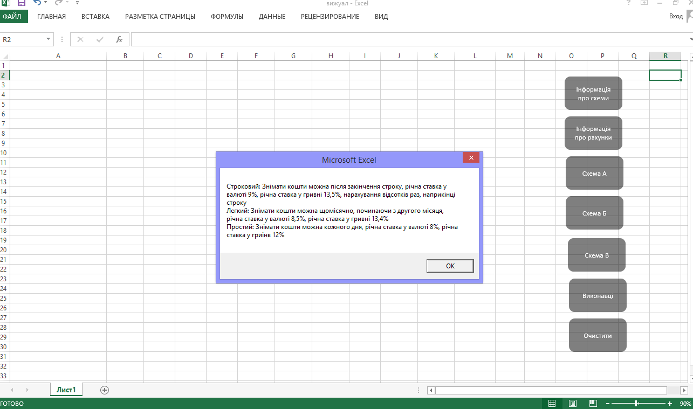Кнопка «Схема А» містить дані для розрахунку залишку після покупки доларів при певній сумі спочатку, прорахували отримані гривні та долари з банки та відобразили залишок на 2012 рік:
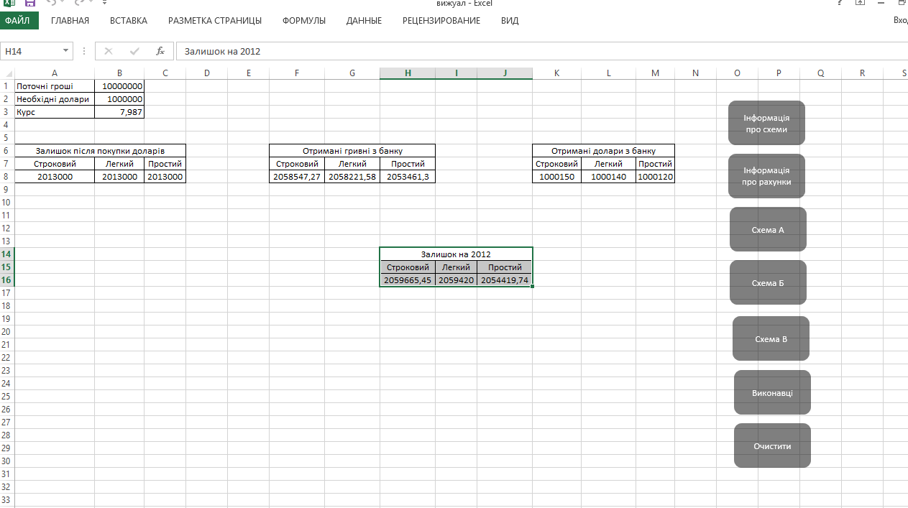Кнопка «Схема Б» містить дані про гроші отримані після вкладу в банк, переведені гроші в долари та залишок після всіх грошових операцій в трьох рахунках одразу: строковому, легкому та простому. Зроблено для того, щоб оцінити доцільність використання, порівняти можливості:
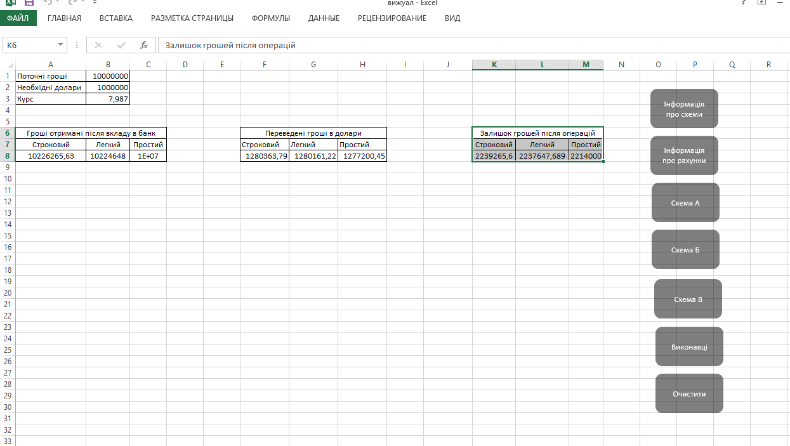Кнопка «Схема В» відображує чи можна купити ф’ючерси з ціною базового активу (курсом долара) 7,8 грн:
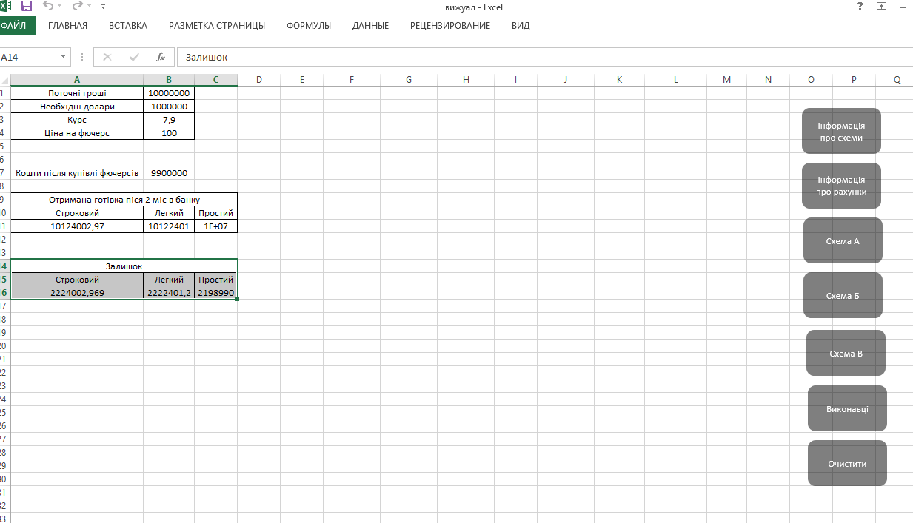Кнопка «Виконавці» показує хто саме створив програму:
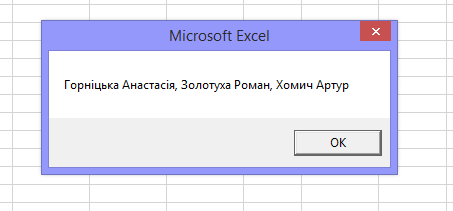Кнопка «Очистити» створена для того, щоб повернутись до початкового інтерфейсу.
Отже, дослідивши поставлену перед нами проблему щодо закупівлі устаткування на суму 1000000 доларів США та доцільності використання всіх варіантів середовища визначення результатів поставленої задачі можемо зробити такі висновки: